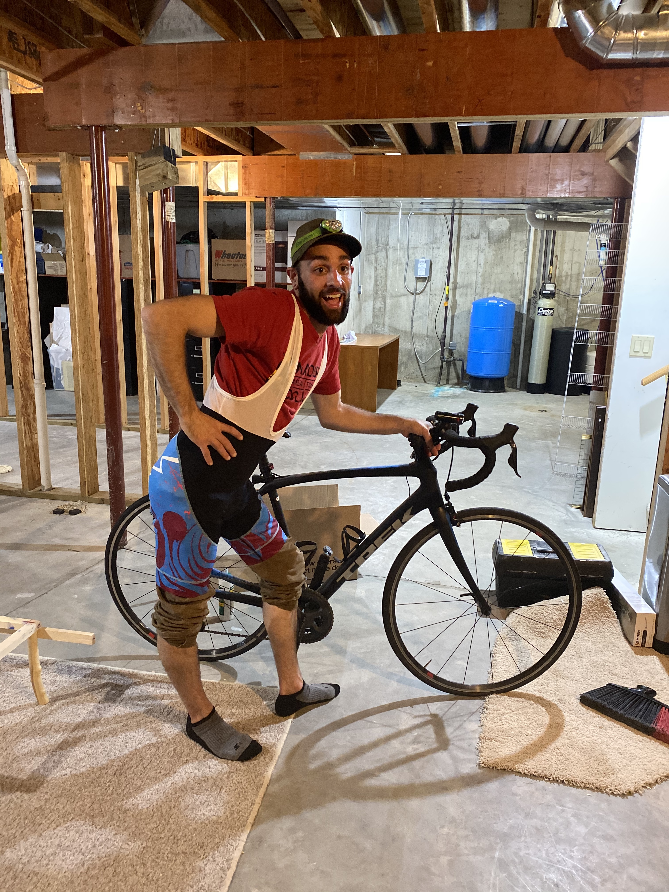
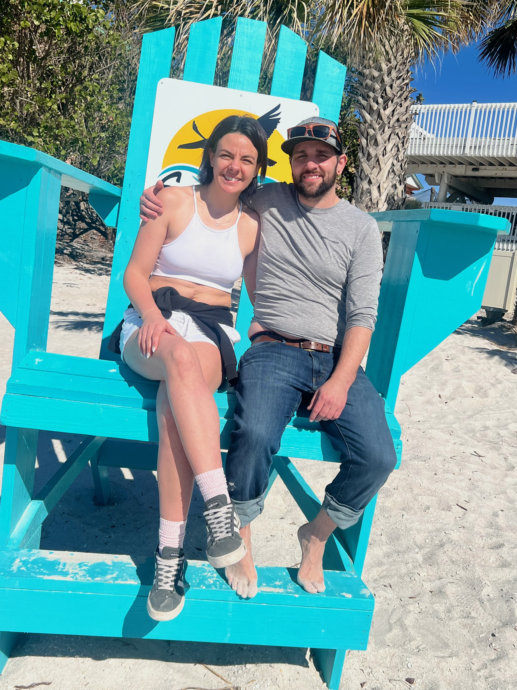
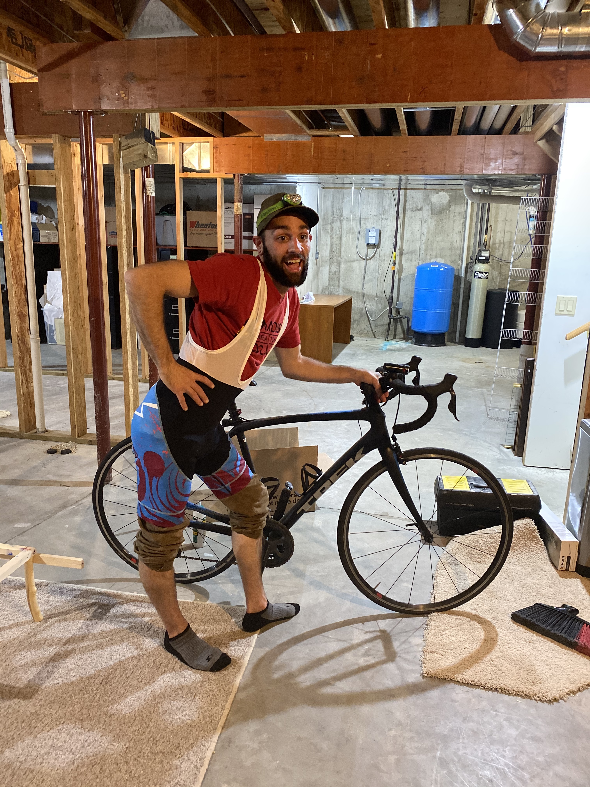
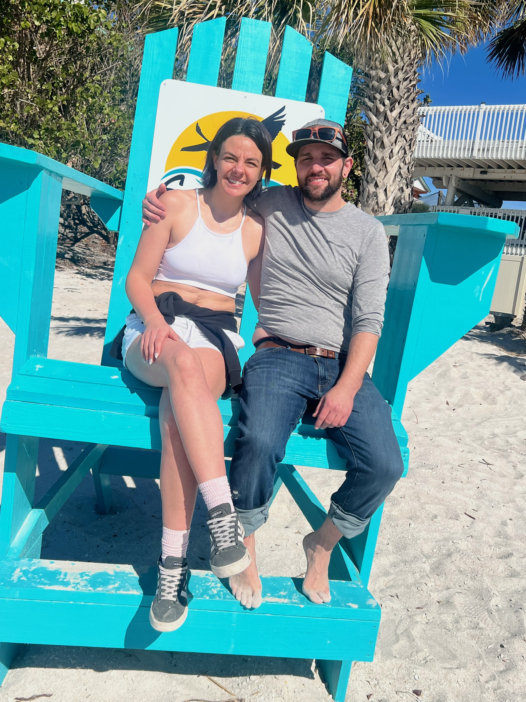

Hobbies
David has a ton of hobbies and ways he likes to spend his time. For work, David does carpentry work and other home decorating. He enjoys interior and exterior painting as well. When David's not working or doing woodworking in the backyard, he enjoys riding bikes and taking Juneau and Bear for long walks at the many dog parks near his home. David also enjoys going on vacation, just like anyone else. He and Melissa recently visited Puerto Rico with Melissa's family - David had never been to anywhere near the Carribean.
 
"

"